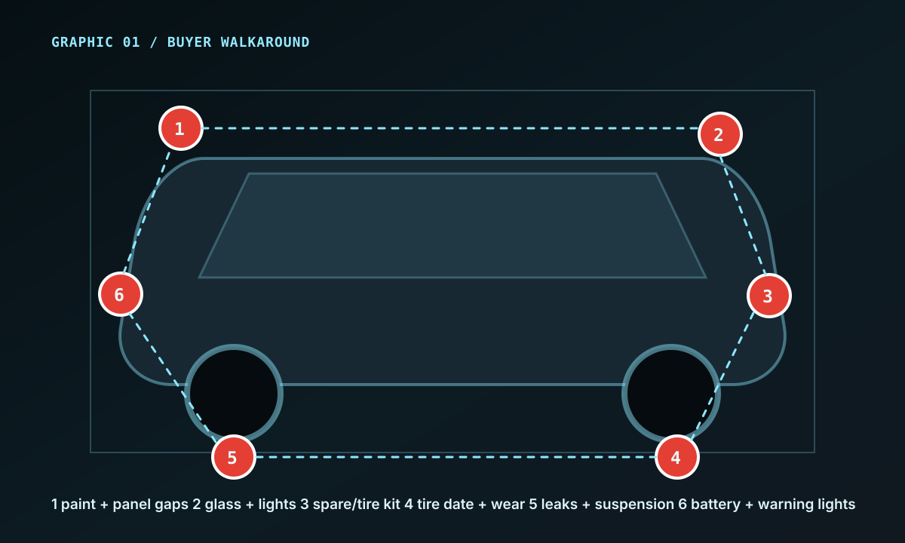
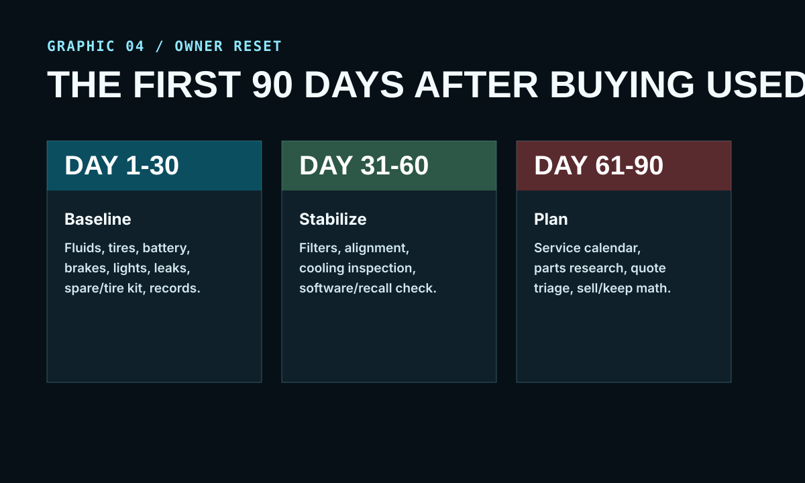

31 Overlooked Checks, Habits, Parts, and Model-Year Rules That Help Cars and Trucks Last Longer, Cost Less, and Stay Repairable
Buy better. Maintain earlier. Spot the repair traps most owners discover after the bill arrives.
A practical buyer and owner field guide for modern cars, trucks, pickups, high-mileage vehicles, and anyone who wants more control over repairability, software features, parts access, and hidden ownership cost. Pair it with the companion ebook, Vehicle Ownership Secrets, for the hidden cost files and counter scripts behind the checks.
Read this first
What this book is for
This book is not a repair manual for one brand, one engine, or one model year. It is a decision manual. It helps you look at a car or truck the way a careful owner, mechanic, fleet manager, or parts-counter veteran would look at it before money changes hands.
Modern vehicles can be excellent, but they are also more electronic, more expensive, more option-dependent, and more difficult to diagnose without the right context. A low payment can hide a high repair path. A shiny truck can hide payload problems. A clean interior can hide weak records. A model name you trust can change dramatically from one year to the next.
The strongest lens in this book is modern ownership economics: OEM decisions, dealer-only procedures, software accounts, module resets, calibration requirements, parts availability, and right-to-repair-style questions that decide whether a vehicle stays usable after the warranty conversation ends.
This 2026 bundle also includes Vehicle Ownership Secrets, a 100+ page companion ebook focused on hidden cost files: dealer-only systems, software transfer, ADAS calibration, quote scripts, parts access, diagnostics, calibration, and the savings map behind modern ownership.
The main rule: a reliable vehicle is not just a good engine. It is a good engine, a proven year, a sane service path, accessible parts, transparent software features, clean records, and an owner who catches small problems before they become invoices.
Educational material only. Always follow the owner's manual, safety procedures, warranty terms, emissions laws, and local regulations. When in doubt, consult a qualified mechanic.
Contents
The 31 checks
Part I - Buying the right vehicle
The 15-minute walkaround
The model-year rule
First-year redesign traps
Service history like a mechanic
The trim-level problem
Part II - Repairability before you buy
The no-computer repairability test
Battery registration and module resets
The missing spare tire problem
Dealer-only parts and procedures
Software subscriptions and feature locks
Part III - The 300,000-mile habits
Oil intervals
Transmission heat
Cooling system neglect
Tires and suspension clues
Grounds and phantom electronics
Part IV - OEM decisions and owner files
OEM choices that raise repair cost
Chevy habits and hidden owner functions
Towing before damage
Payload, tires, and brakes
Model-year demand and repairable years
Part V - Modern vehicle traps
Sealed-for-life parts
No-spare roadside math
Warning lights
Diagnostic and calibration bills
Maintenance vs. upsell
Part VI - The owner system
The glovebox log
The 90-day reset
The annual calendar
Parts-counter questions
Repair quote triage
Sell-or-keep decision
Part I
Buying the right vehicle
The cheapest repair is the one you never inherit. Before you fall in love with paint, trim, tires, technology, or monthly payment, you need to know whether the vehicle has a clean ownership path.
Check 01
The 15-minute walkaround that reveals neglect
Walk the vehicle in the same order every time: paint, panel gaps, glass, lights, tires, underbody, fluids, battery, dashboard warnings, interior wear, and records. The order matters because it keeps emotion from running the inspection.
Why it mattersNeglect usually shows up in clusters. Bad tires, weak records, dirty fluids, warning lights, and mismatched panels rarely travel alone.
What to doTake photos, write down tire date codes, check every light, scan for leaks, and ask for the maintenance file before discussing price.
Red flagThe seller says "it just needs a sensor" without a recent diagnostic printout or repair order.

Check 02
The model-year rule
A nameplate is not a guarantee. The same model can have a different engine, transmission, platform, electronics package, software strategy, or parts ecosystem depending on the year. You are not buying a name. You are buying a specific year, trim, drivetrain, and service history.
Why it mattersSome years are known for expensive failures while nearby years are much easier to own.
What to doResearch the exact year, engine, transmission, trim, recalls, technical service bulletins, common failures, software complaints, and parts cost.
Red flagPricing is based on brand reputation instead of that exact model-year history.
Check 03
First-year redesign traps and final-year sweet spots
First-year redesigns can be exciting, but they often carry the unknowns: new electronics, new supplier parts, new calibration, new software behavior, and new service procedures. Late-cycle vehicles are less glamorous, but the problems are usually better documented.
Why it mattersKnown flaws are easier to price than unknown flaws. The market often discounts age without accounting for proven reliability.
What to doMap the model cycle. Identify launch year, refresh year, final production year, major drivetrain changes, and major electronics or infotainment changes.
Red flagA used first-year redesign is only slightly cheaper than a proven late-cycle vehicle.
Check 04
How to read service history like a mechanic
Good service records show dates, mileage, parts, fluids, and complaints. Weak records show vague notes like "serviced" or "checked over." You want proof that the vehicle received maintenance before problems forced repairs.
Why it mattersA clean car with missing records is still a mystery. A worn car with complete records may be easier to trust.
What to doLook for oil changes, transmission service, coolant, brake fluid, filters, tires, battery, recalls, and repeated complaints.
Red flagThe same symptom appears on multiple invoices without a final repair.
Check 05
The trim-level problem
The higher trim can be the worse long-term ownership choice if it adds air suspension, adaptive dampers, complex infotainment, special lighting, panoramic roofs, subscriptions, or low-volume parts. Comfort features are not free. They become repair categories later.
Why it mattersTwo vehicles with the same engine can have very different ownership costs because of options.
What to doPrice replacement headlamps, wheels, sensors, infotainment units, cameras, suspension parts, roof components, and any feature that requires activation before buying.
Red flagThe feature that sold the vehicle is also the most expensive part to replace.
Part II
Repairability before you buy
Modern vehicles are not just machines. They are networks of modules, sensors, software, accounts, calibrations, and proprietary procedures. Before buying, ask how the vehicle will be diagnosed when something goes wrong.
Check 06
The no-computer repairability test
Ask what can still be inspected, serviced, or replaced without brand-specific tools. The goal is not to avoid technology. The goal is to know when normal ownership turns into dealer dependency.
Why it mattersDealer-only diagnostics, security gateways, and calibration steps can turn a small issue into a scheduling problem and a larger invoice.
What to doResearch whether independent shops can scan, calibrate, program, access service information, and service the exact vehicle.
Red flagLocal independent shops say they avoid that platform.
Check 07
Battery registration, module resets, and jump-start mistakes
A weak battery can create strange warnings, communication errors, failed starts, and unnecessary parts replacement. Newer vehicles may need correct jump points, battery registration, sleep-cycle time, or module reset procedures.
Why it mattersElectrical confusion often starts with voltage, grounds, or a battery the vehicle no longer trusts.
What to doKnow the jump-start procedure, battery type, registration requirement, and location of main grounds.
Red flagA vehicle has multiple unrelated electrical complaints after a battery event.
Check 08
The missing spare tire problem
Many modern vehicles replace a spare tire with an inflator kit. That may satisfy a brochure, but it does not solve sidewall damage, blowouts, expired sealant, damaged wheels, remote roads, or towing after a tire failure.
Why it mattersRoadside readiness is part of ownership cost, especially for commuters, families, and rural drivers.
What to doCheck whether the vehicle has a spare, jack, lug key, compressor, sealant date, and safe storage for a real spare.
Red flagThe seller does not know where the tire kit is or the sealant is expired.
Check 09
Dealer-only parts, procedures, and low-volume components
A vehicle ages better when common failure parts are available, reasonably priced, and understood by independent shops. Low-volume trims, rare engines, locked modules, and special electronic components can become expensive even if the vehicle is mechanically sound.
Why it mattersParts scarcity and restricted procedures create downtime. Downtime is a real cost even when the repair itself is simple.
What to doSearch parts availability for sensors, lights, modules, suspension parts, cooling components, common wear items, and required programming steps.
Red flagMultiple common parts are dealer-only, backordered, VIN-locked, or priced like luxury components.
Check 10
Software subscriptions, locked features, and account transfer
Some vehicles separate hardware from access. Heated seats, remote start, navigation, driver assistance, phone-as-key functions, and connected services may depend on accounts, subscriptions, cellular service, or software availability.
Why it mattersA feature that requires a subscription, account, or activation can change the ownership cost after purchase.
What to doAsk which features require accounts, apps, subscriptions, cellular service, dealer activation, or transfer from the previous owner.
Red flagThe seller advertises features that are not currently active or transferable on the vehicle.
Part III
The 300,000-mile habits
Longevity is usually boring. It is fluid, heat, rubber, voltage, records, and small inspections repeated before the vehicle complains.
Check 11
Oil intervals and real driving conditions
"Normal service" is not normal for many drivers. Short trips, heat, cold starts, idling, towing, dusty roads, and stop-and-go traffic all make the engine work harder than the calendar suggests.
Why it mattersOil is cheaper than timing components, turbochargers, lifters, bearings, and sludge repairs.
What to doUse the severe-service schedule when your driving fits it. Track date and mileage, not just dashboard percentage.
Red flagThe seller says the vehicle "tells you when it needs oil" but has no receipts.
Check 12
Transmission heat, fluid, and habits
Transmission life is heavily influenced by heat, fluid condition, towing, aggressive launches, stop-and-go driving, and delayed service. A transmission can feel fine during a short test drive and still be living on borrowed time.
Why it mattersTransmission repairs are often one of the largest ownership shocks.
What to doCheck service history, fluid recommendations, towing use, shift quality, leaks, and temperature behavior when possible.
Red flagHarsh shifts, delayed engagement, shudder, burnt smell, or "lifetime fluid" with high mileage and no service plan.
Check 13
Cooling system neglect
Heat destroys engines, transmissions, batteries, electronics, and plastic components. Coolant leaks, weak fans, clogged radiators, old hoses, and ignored temperature swings are not small problems.
Why it mattersCooling problems can turn a reliable drivetrain into a failed drivetrain quickly.
What to doInspect coolant level, color, hoses, radiator, fans, water pump area, reservoir, and any sweet smell after driving.
Red flagFresh coolant smell, dried residue, unexplained low coolant, or a seller who says "it only gets warm in traffic."
Check 14
Tires, alignment, and suspension wear
Tires are a report card. Uneven wear can reveal bad alignment, worn suspension, overloaded use, aggressive driving, poor rotations, or accident history. A fresh set of cheap tires can hide clues.
Why it mattersSuspension and tire clues often appear before the seller admits how the vehicle was used.
What to doCheck date codes, brand match, tread depth, inside edges, cupping, cracks, load rating, and alignment records.
Red flagNew tires installed right before sale with no alignment paperwork.
Check 15
Battery, alternator, and grounds before phantom electronics
Modern vehicles can act possessed when voltage is unstable. Before assuming a bad module, check the battery, charging system, terminals, main grounds, water intrusion, and aftermarket wiring.
Why it mattersMany expensive diagnostic paths start with a basic electrical foundation that was never verified.
What to doTest battery health, charging voltage, ground straps, corrosion, parasitic draw symptoms, and old accessories.
Red flagRandom warnings, dead battery history, aftermarket alarm wiring, or repeated "no problem found" visits.
Part IV
OEM decisions and owner files
This section leans into the practical owner questions raised by modern car and truck ownership: service access, Chevy habits, towing, payload, model-year demand, and whether a platform stays repairable as it ages.
Check 16
When OEM choices make simple repairs expensive
Some repair bills grow because of where a part is packaged, what must be removed to reach it, whether a module needs programming, or whether an independent shop can access the service information. A vehicle can be mechanically strong and still be frustrating to repair.
Why it mattersLabor access, programming, calibration, and parts availability can matter as much as the part that failed.
What to doAsk independent shops what they avoid, price common sensors and modules, and research whether common repairs require unusual labor.
Red flagA routine failure requires body removal, special programming, dealer-only tools, or a part that is already scarce.
Check 17
Chevy habits and hidden owner functions
Chevy and Silverado ownership gives useful concrete examples without making this a one-brand book. Many owners never learn vehicle settings, trailer features, remote functions, maintenance reminders, drive modes, and safety settings that change how the vehicle behaves.
Why it mattersKnowing the menu system helps you spot disabled features, warnings, trailer settings, maintenance data, and account-dependent functions.
What to doRead the quick-start guide, explore owner menus, check recall status, confirm all advertised features work, and transfer any required app access.
Red flagButtons, camera views, trailer menus, or remote features do not behave as described.
Check 18
Truck towing checks before transmission or cooling damage
A truck can pull a load and still be the wrong truck for that load. Towing stress includes payload, tongue weight, cooling capacity, gearing, transmission temperature, brakes, tires, and driver habits.
Why it mattersEngine power is only one part of the tow equation.
What to doConfirm payload sticker, axle ratio, hitch rating, tire rating, brake condition, cooling condition, and actual loaded weight.
Red flagThe owner talks about horsepower but cannot answer payload or tongue weight.
Check 19
Payload, tires, brakes, and the myth of "it can tow it"
Many pickups run out of payload before they run out of advertised tow rating. Passengers, tools, accessories, bed cargo, and trailer tongue weight all count against payload.
Why it mattersAn overloaded truck wears faster, stops worse, handles poorly, and may be unsafe.
What to doRead the door sticker, weigh the setup, verify load-rated tires, and service brakes before heavy use.
Red flagLift kit, oversized tires, heavy accessories, and no updated payload math.
Check 20
Model-year demand and the repairable-years question
Some years become desirable because they sit before a costly redesign, after a known fix, before a disliked feature, or during a proven drivetrain run. The market notices once owners talk.
Why it mattersGood years can hold value because buyers trust the known repair path, parts ecosystem, and ownership math.
What to doCompare owner forums, service bulletins, recalls, parts support, fleet feedback, and price trends by exact year.
Red flagA seller prices nostalgia as reliability without records to back it up.
Part V
Modern vehicle traps
The trap is rarely one dramatic failure. It is usually a small ownership assumption colliding with OEM packaging, software access, calibration requirements, parts scarcity, or a repair path nobody questioned early.
Check 21
Why sealed-for-life parts still need a plan
"Sealed" does not mean immune to heat, wear, contamination, or time. It often means the service procedure is less obvious, more dependent on the right fluid or scan routine, and more important to research before high mileage.
Why it mattersLifetime fluid usually means lifetime under assumptions that may not match your use.
What to doResearch severe-service recommendations, independent shop practices, and known failure mileage for the exact component.
Red flagNo dipstick, no service history, high mileage, towing history, and rough operation.
Check 22
Why no-spare vehicles need a roadside plan
An inflator kit may help a small tread puncture. It does not fix shredded tires, sidewall damage, bent wheels, expired sealant, missing compressors, or long rural waits.
Why it mattersThe cost of being stranded is bigger than the cost of a spare plan.
What to doBuild a tire plan: spare, plug kit where appropriate, compressor, jack, lug key, pressure gauge, and roadside coverage.
Red flagThe kit is missing, expired, or stored where it cannot be reached when the trunk or bed is loaded.
Check 23
Small warning lights that become expensive
Warning lights are not all equal, but they are all information. A flashing light, overheating warning, low oil pressure, charging warning, brake warning, or transmission temperature alert deserves immediate attention.
Why it mattersSome warnings are early clues. Others are stop-now events.
What to doLearn the warning hierarchy in the owner's manual and keep a basic scan tool for non-emergency codes.
Red flagThe seller cleared codes before your test drive or says a warning light is "normal for this model."
Check 24
What to ask before approving a diagnostic or calibration bill
A diagnostic fee can be fair. The problem is approving work without understanding the test result, suspected cause, software update, calibration step, next step, and risk if you wait.
Why it mattersGood questions separate diagnosis from guessing and repair from programming.
What to doAsk what code, symptom, scan data, test, measurement, calibration, or inspection supports the recommendation.
Red flagThe shop recommends a major part or module but cannot explain how it was confirmed.
Check 25
How to tell maintenance from upsell
Maintenance protects the vehicle. Upsell protects the ticket. The difference is evidence: mileage, fluid condition, scan data, measurement, wear, manufacturer schedule, safety risk, or a known weak point.
Why it mattersRejecting all recommendations is as risky as approving all recommendations.
What to doAsk for measurements, photos, old parts, scan results, fluid condition, and whether the item is urgent, soon, or optional.
Red flagEverything is urgent, but nothing is measured or shown.
Part VI
The owner documentation system
The owner with records has leverage. Records help you maintain earlier, diagnose faster, negotiate better, prove software and recall status, and sell with evidence instead of promises.
Check 26
The glovebox log that protects resale value
Keep a simple log: date, mileage, work done, parts used, shop name, cost, software updates, recalls, and next due item. Attach receipts or photos. A buyer trusts patterns more than claims.
Why it mattersRecords turn maintenance into value.
What to doKeep a folder in the glovebox and a digital backup with photos of invoices.
Red flagYou cannot prove the work you are counting on during resale.
Check 27
The 90-day used-vehicle reset
The first 90 days after buying used should establish a baseline. Do not wait for the vehicle to tell you what the previous owner skipped.
Why it mattersA reset turns an unknown vehicle into a managed vehicle.
What to doInspect fluids, tires, brakes, battery, lights, filters, leaks, recalls, records, software/accounts, and upcoming service.
Red flagYou start upgrading accessories before checking maintenance basics.

Check 28
The annual inspection calendar
Once per year, inspect the ownership categories that age quietly: battery, tires, fluids, leaks, suspension, brakes, lights, belts, hoses, wipers, recalls, software features, subscriptions, and emergency gear.
Why it mattersCalendar checks catch slow failures that mileage alone misses.
What to doPick one month every year and run the same checklist. Keep the report.
Red flagA vehicle only gets attention when it fails inspection or strands you.
Check 29
The parts-counter question list
Before buying a vehicle, call a dealer parts counter, talk to an independent shop, or search reputable parts sources for common components. Ask what fails, what is backordered, what needs programming, and what is surprisingly expensive.
Why it mattersParts people see patterns long before sellers admit them.
What to doPrice headlamps, sensors, modules, cooling parts, suspension, brakes, drivetrain service parts, and any required programming.
Red flagA common failure part is unavailable, locked to dealer programming, or priced far above the vehicle class.
Check 30
The repair quote triage sheet
Every quote should be sorted into safety, reliability, maintenance, diagnosis, calibration/programming, cosmetic, and optional categories. Then ask what evidence supports each item and what happens if you wait.
Why it mattersTriage keeps fear from driving the repair decision.
What to doAsk for photos, measurements, codes, scan data, test results, labor breakdown, part quality, calibration requirements, and priority.
Red flagThe quote is large, vague, and urgent without supporting evidence.
Check 31
The sell-or-keep decision checklist
Keeping a vehicle is smart when the repair path is known, the body is solid, parts are available, software access is understood, and the next 12 months are predictable. Selling is smart when multiple expensive systems are approaching failure at once.
Why it mattersOwners often sell too early from fear or keep too long from attachment.
What to doCompare repair cost, replacement cost, downtime, insurance, registration, fuel, software or subscription costs, needs, and remaining known risks.
Red flagYou are making the decision based on one bill instead of the next year of ownership.
Expanded owner field note 01
Cold-Start Behavior
A cold start tells you more than a warm test drive. Listen for timing noise, belt squeal, lifter tick, exhaust leaks, rough idle, warning lights, and smoke before the vehicle has a chance to hide the evidence.
Owner categoryBuying used
Why it mattersThe first minute exposes problems sellers can mask after the engine is warm.
What to doAsk to start the vehicle after it has sat overnight or for several hours.
Red flag: Seller warms it up before you arrive and says that is normal.
Expanded owner field note 02
Warm Restart Check
Some fuel, battery, starter, heat-soak, and module issues appear after the vehicle is hot. A clean cold start does not prove the system is healthy.
Owner categoryBuying used
Why it mattersHot restarts reveal failures that a short driveway start can miss.
What to doDrive until warm, shut it off for ten minutes, then restart while watching the dash.
Red flag: Long crank, warning lights, weak starter speed, or a seller rushing the test.
Expanded owner field note 03
Fluid Color Baseline
Fluid color is not a perfect lab test, but it gives you a baseline. Engine oil, coolant, brake fluid, transmission fluid where visible, and power steering fluid where present all tell part of the story.
Owner categoryMaintenance
Why it mattersNeglected fluid often points to neglected ownership.
What to doPhotograph reservoirs and dipsticks before buying or approving service.
Red flag: Freshly detailed engine bay with old, dark, low, or contaminated fluids.
Expanded owner field note 04
Coolant Smell Test
A sweet smell after a drive can point to coolant residue, heater core seepage, hose leaks, or a cooling-system problem not visible during a quick walkaround.
Owner categoryMaintenance
Why it mattersSmall coolant leaks can become overheating, head gasket, or stranded-driver problems.
What to doInspect after a full warm drive and look for residue under caps, hoses, radiator ends, and the reservoir.
Red flag: Seller says coolant smell is normal or recently topped off without a repair record.
Expanded owner field note 05
Brake Pedal Feel
A brake pedal can reveal air, old fluid, failing hydraulics, warped rotors, stuck calipers, or worn components before the inspection report does.
Owner categorySafety
Why it mattersBrake work is both safety-critical and negotiation-relevant.
What to doCheck pedal height, firmness, pulsation, pulling, noise, and service history.
Red flag: Soft pedal, vibration, grinding, pull, or fresh pads installed over damaged rotors.
Expanded owner field note 06
Tire Date Codes
Tread depth is only one tire clue. Date codes, cracking, uneven wear, mismatched brands, repairs, and load rating matter too.
Owner categoryBuying used
Why it mattersOld or mismatched tires can erase part of the bargain immediately.
What to doRead DOT date codes and price a correct full set before negotiating.
Red flag: New cheap tires hide alignment, suspension, or hard-use clues.
Expanded owner field note 07
Alignment Clue Map
Inside-edge wear, steering wheel off-center, drifting, cupping, and uneven shoulders can point to impact history or worn suspension.
Owner categoryRepairability
Why it mattersAlignment issues can reveal deeper front-end cost.
What to doInspect tires with the wheels turned and ask for alignment records.
Red flag: Seller says it only needs an alignment after installing new tires.
Expanded owner field note 08
Battery Age And Registration
Modern vehicles can need more than a battery swap. Battery type, registration, coding, and voltage history can affect modules and charging behavior.
Owner categoryDiagnostics
Why it mattersA weak electrical foundation can mimic expensive failures.
What to doCheck battery date, type, voltage, charging output, and registration requirement.
Red flag: Multiple unrelated warnings after a recent battery change.
Expanded owner field note 09
Ground Strap Inspection
Ground straps and main connections are boring until they create phantom electronics. Corrosion, looseness, accident repair, or aftermarket wiring can create strange behavior.
Owner categoryDiagnostics
Why it mattersGood voltage still fails if the return path is weak.
What to doInspect main grounds, terminals, and added accessories before chasing modules.
Red flag: Random warnings, intermittent no-start, or repeated no-problem-found visits.
Expanded owner field note 10
Module Water Intrusion
Leaks near windshields, sunroofs, cowls, trunks, and floorboards can reach wiring, connectors, and control modules.
Owner categoryRepairability
Why it mattersWater damage turns a simple vehicle into an electrical guessing game.
What to doSmell carpets, check under mats, inspect spare well, and look for corrosion at connectors.
Red flag: Musty odor, fogged glass, unexplained module faults, or fresh interior shampoo.
Expanded owner field note 11
Sunroof Drain Reality
A panoramic roof or sunroof is an opening in the body with drains that must keep working. A clogged drain can become water damage.
Owner categoryTrim risk
Why it mattersComfort options become repair categories later.
What to doCheck headliner stains, pillar dampness, drain history, and roof operation.
Red flag: Seller says the roof sticks or leaked once but was dried out.
Expanded owner field note 12
Headlamp Replacement Cost
Modern headlamps can be sealed LED units with modules, sensors, aiming steps, or trim-specific part numbers.
Owner categoryParts access
Why it mattersOne damaged lamp can cost like a major repair.
What to doPrice headlamps and tail lamps before buying high trims.
Red flag: Cracked lamp, condensation, flicker, warning, or mismatched replacement.
Expanded owner field note 13
Windshield Sensor Cost
A windshield replacement can require cameras, brackets, heating elements, rain sensors, and ADAS calibration.
Owner categoryCalibration
Why it mattersGlass work can become a second repair bill.
What to doAsk whether the exact vehicle needs calibration after windshield replacement.
Red flag: Cheap glass quote that excludes calibration or sensor work.
Expanded owner field note 14
Radar And Camera Brackets
Minor bumper or grille damage can affect radar brackets, cameras, and sensor aim even when paint looks fine.
Owner categoryCalibration
Why it mattersSafety-system alignment depends on more than visible cosmetics.
What to doInspect mounts, repair invoices, warning lights, and calibration proof.
Red flag: Prior collision with no ADAS calibration documentation.
Expanded owner field note 15
Key And Immobilizer Count
A missing key can be more than inconvenience. Keys, immobilizers, phone-as-key, and account locks can require dealer help.
Owner categorySoftware access
Why it mattersAccess is part of ownership cost.
What to doConfirm both physical keys, digital keys, app transfer, and immobilizer status.
Red flag: Only one key, no app reset, or seller account still connected.
Expanded owner field note 16
Account Transfer Checklist
Connected services can hold remote start, maps, service records, phone-as-key, subscriptions, and feature activation.
Owner categorySoftware access
Why it mattersHardware without account access may not deliver advertised features.
What to doVerify app ownership transfer before payment.
Red flag: Seller advertises features that cannot be demonstrated.
Expanded owner field note 17
Subscription Inventory
Some features require recurring payments. Navigation, remote access, driver assistance, and data services can change ownership math.
Owner categoryModern cost
Why it mattersRecurring software cost is still vehicle cost.
What to doList every active, expired, trial, and non-transferable feature.
Red flag: The feature works today only because the seller still pays for it.
Expanded owner field note 18
Infotainment Generation Risk
A reliable drivetrain can be attached to an infotainment system that is expensive, unsupported, or tied to features you use daily.
Owner categoryTrim risk
Why it mattersScreens, modules, cameras, and audio systems become repair categories.
What to doSearch common failures and replacement costs for the exact generation.
Red flag: Dead pixels, slow boot, rebooting, unavailable maps, or nonworking camera.
Expanded owner field note 19
Climate Control Module Check
HVAC faults can hide blend-door, compressor, condenser, control head, refrigerant, sensor, or module issues.
Owner categoryComfort cost
Why it mattersClimate problems can be labor-heavy and easy to underprice.
What to doTest heat, AC, fan speeds, zones, defrost, recirculation, and odors.
Red flag: Seller says it just needs a recharge.
Expanded owner field note 20
AC Recharge Trap
Low refrigerant is a symptom, not a repair plan. The leak still needs to be found and fixed.
Owner categoryMaintenance
Why it mattersA cheap recharge can delay a real repair until it gets hotter and more expensive.
What to doAsk for leak diagnosis, dye results, pressure readings, and repair history.
Red flag: Recent recharge with no leak repair documentation.
Expanded owner field note 21
Transmission Service Evidence
Transmission health is not proven by one smooth test drive. Heat history, fluid, software, towing, and service records matter.
Owner categoryMajor cost
Why it mattersTransmission surprises change ownership math fast.
What to doAsk for service intervals, fluid type, shift complaints, updates, and driving history.
Red flag: Lifetime-fluid claims with high mileage and no plan.
Expanded owner field note 22
Turbo Heat Discipline
Turbo engines can be strong, but oil quality, heat, cooldown habits, air filtration, and maintenance history matter.
Owner categoryEngine life
Why it mattersSmall maintenance gaps can age expensive parts.
What to doCheck oil records, smoke, boost behavior, coolant leaks, and service bulletins.
Red flag: Performance mods, unknown tune, oil neglect, or smoke on startup.
Expanded owner field note 23
Timing System Risk
Timing belts, chains, guides, tensioners, and related components can have model-specific weak points.
Owner categoryMajor cost
Why it mattersIgnoring timing history can turn maintenance into engine failure.
What to doConfirm interval, records, symptoms, and known failures for the exact engine.
Red flag: Rattle, unknown history, extended intervals, or seller guessing.
Expanded owner field note 24
Cooling Fan Operation
Fans, relays, modules, shrouds, and temperature sensors can quietly decide whether the vehicle survives traffic.
Owner categoryHeat control
Why it mattersOverheating often starts with small cooling-system weaknesses.
What to doWatch temperature during idle with AC on and after a road test.
Red flag: Temperature creep, fan noise, nonworking AC fan, or coolant residue.
Expanded owner field note 25
Oil Leak Location
All leaks are not equal. Valve cover seepage and rear main leaks do not carry the same labor path.
Owner categoryRepair cost
Why it mattersLeak location matters more than leak existence alone.
What to doPhotograph the leak source and ask what must be removed to repair it.
Red flag: Fresh underbody cleaning with no explanation.
Expanded owner field note 26
Underbody Fastener Condition
Rusty bolts, broken shields, missing clips, and rounded fasteners show how future repairs will go.
Owner categoryRepairability
Why it mattersA simple job can become expensive when every fastener fights back.
What to doInspect underside hardware, shields, exhaust, brake lines, and subframe points.
Red flag: Fresh coating over old rust or missing underbody panels.
Expanded owner field note 27
Rust In Hidden Zones
Rust behind wheel liners, under pinch welds, around subframes, near brake lines, and under trim matters more than visible surface rust.
Owner categoryBuying used
Why it mattersStructural and brake-line rust can end the ownership plan.
What to doInspect common hidden rust zones with a light.
Red flag: Seller only shows clean exterior panels.
Expanded owner field note 28
Exhaust System Cost
Catalysts, flex pipes, sensors, particulate systems, and emissions hardware can be expensive and legally sensitive.
Owner categoryLegal cost
Why it mattersEmissions repairs cannot be treated like optional noise fixes.
What to doCheck codes, inspection status, catalyst readiness, and prior repairs.
Red flag: Recent code clearing or incomplete emissions monitors.
Expanded owner field note 29
Inspection Monitor Readiness
A check-engine light can be cleared, but readiness monitors tell whether the vehicle has completed self-tests.
Owner categoryDiagnostics
Why it mattersCleared codes can hide an unresolved issue.
What to doUse a scan tool to check readiness before buying where emissions testing matters.
Red flag: Multiple monitors incomplete right before sale.
Expanded owner field note 30
Recall Completion Proof
A recall listed online is only useful if completed correctly. Open recalls can affect safety, software, and resale.
Owner categoryRecords
Why it mattersRecall status is part of the ownership file.
What to doCheck VIN recall status and ask for completion documentation.
Red flag: Seller says all recalls were done but has no proof.
Expanded owner field note 31
Technical Service Bulletin Clues
TSBs can reveal common symptoms, updated procedures, and known repairs without being formal recalls.
Owner categoryResearch
Why it mattersA known pattern can save diagnostic time.
What to doSearch symptom plus exact model year and TSB before approving guesswork.
Red flag: Repeated repair attempts without checking known bulletins.
Expanded owner field note 32
Owner Manual Warning Hierarchy
Not every warning light has the same urgency. Some mean schedule service, others mean stop now.
Owner categorySafety
Why it mattersReacting correctly protects the vehicle and the driver.
What to doRead the warning hierarchy before you need it.
Red flag: Continuing to drive through overheat, oil pressure, brake, or charging warnings.
Expanded owner field note 33
Used EV Battery Questions
Electric and hybrid vehicles add battery health, charging history, thermal management, software support, and warranty transfer to the inspection.
Owner categoryModern powertrain
Why it mattersBattery condition changes resale and repair economics.
What to doAsk for battery health data, warranty status, charging habits, and cooling-system service.
Red flag: Seller only talks about range estimate after a full charge.
Expanded owner field note 34
Hybrid Cooling Loop Check
Hybrids can have separate cooling loops, inverters, pumps, and battery thermal systems.
Owner categoryModern powertrain
Why it mattersA neglected cooling loop can threaten expensive electronics.
What to doCheck service history and warning lights for hybrid cooling components.
Red flag: Unknown coolant history or warning lights after hot driving.
Expanded owner field note 35
Charging Port And Cable Audit
Charge ports, cables, adapters, and onboard chargers are part of the ownership package.
Owner categoryEV ownership
Why it mattersMissing or damaged charging gear becomes immediate cost.
What to doInspect charge port, test charging, verify cables, and check adapter needs.
Red flag: Seller cannot demonstrate charging or says cable is missing.
Expanded owner field note 36
ADAS Feature Demonstration
Driver-assistance features should be demonstrated, not assumed from badges or buttons.
Owner categoryFeature proof
Why it mattersNonworking features can point to sensors, cameras, calibration, or subscriptions.
What to doTest lane alerts, cameras, blind spot, adaptive cruise, and parking sensors where safe.
Red flag: Feature unavailable message or seller cannot show it working.
Expanded owner field note 37
Camera System Check
Backup, surround-view, and blind-spot cameras can fail from water, wiring, modules, or collision repairs.
Owner categoryElectronics
Why it mattersCameras affect safety and repair estimates.
What to doCheck every view, guideline, lens, delay, and warning message.
Red flag: One view missing, image flickers, or guidelines do not move.
Expanded owner field note 38
Door And Window Module Clues
Slow windows, dead locks, water intrusion, and door harness issues can reveal body-electrical problems.
Owner categoryBody electronics
Why it mattersSmall convenience failures can become module or wiring repairs.
What to doTest every switch from every door and inspect rubber boots.
Red flag: One door behaves differently after rain or collision repair.
Expanded owner field note 39
Seat And Airbag Warning Check
Seat sensors, belt pretensioners, occupancy mats, and airbag wiring are safety systems, not comfort details.
Owner categorySafety systems
Why it mattersAirbag faults can be expensive and non-negotiable.
What to doConfirm warning lights cycle correctly and inspect seat functions.
Red flag: Airbag light, seatbelt light, or seat harness repairs with no records.
Expanded owner field note 40
Aftermarket Wiring Audit
Remote starts, alarms, audio systems, lighting, trackers, and trailer wiring can create hidden electrical trouble.
Owner categoryElectrical risk
Why it mattersBad wiring can compromise diagnosis and reliability.
What to doLook for splices, loose grounds, fuse taps, and unexplained modules.
Red flag: Seller says previous owner installed something but does not know what.
Expanded owner field note 41
Tow Hitch And Wiring Reality
Even on a car or crossover, hitch wiring can reveal hard use, poor installation, or electrical shortcuts.
Owner categoryUse history
Why it mattersA hidden tow history can change drivetrain and cooling assumptions.
What to doInspect hitch, wiring, cooling package, and service history.
Red flag: Hitch removed before sale but wiring remains.
Expanded owner field note 42
Fleet Or Rideshare Clues
High idle time, city miles, short trips, passenger wear, and frequent starts can age a vehicle differently from highway miles.
Owner categoryUse history
Why it mattersOdometer miles do not show all work performed.
What to doLook for interior wear, idle hours where available, records, and use pattern.
Red flag: Low miles but heavy seat, door, brake, and suspension wear.
Expanded owner field note 43
Rental History Filter
Rental history is not automatically bad, but it changes what you inspect: tires, brakes, cosmetics, records, and accident repairs.
Owner categoryUse history
Why it mattersShort-term drivers rarely maintain long-term value.
What to doAsk for service and repair history, not just ownership category.
Red flag: Good price with vague history and fresh cosmetic fixes.
Expanded owner field note 44
Auction Vehicle Warning
Auction vehicles can be fine, but missing records, title issues, transport damage, and quick flips require more proof.
Owner categoryBuying used
Why it mattersA clean listing can hide a thin paper trail.
What to doAsk why it went through auction and what documentation came with it.
Red flag: Seller cannot explain ownership chain.
Expanded owner field note 45
Title Brand And Insurance Clues
Title status, insurance repairs, and prior losses affect safety, resale, and calibration confidence.
Owner categoryDocumentation
Why it mattersA repaired vehicle needs proof, not optimism.
What to doCheck title, repair invoices, alignment, airbags, calibration, and parts used.
Red flag: Prior damage with no itemized repair file.
Expanded owner field note 46
Pre-Purchase Inspection Scope
A PPI is only as good as the scope. A quick look is not the same as scan data, lift inspection, road test, and records review.
Owner categoryBuying used
Why it mattersInspection scope defines how much risk remains.
What to doAsk exactly what the inspection includes before paying.
Red flag: Inspector never scans modules or checks underside.
Expanded owner field note 47
Independent Shop Availability
A vehicle ages better when good local shops will work on it.
Owner categoryRepairability
Why it mattersDealer dependency affects cost and downtime.
What to doCall two local independent shops before buying an unfamiliar platform.
Red flag: Shops say they avoid that model year or system.
Expanded owner field note 48
Parts Counter Reality Call
Parts availability is a pre-purchase check, not a surprise after failure.
Owner categoryParts access
Why it mattersA cheap vehicle can be expensive if common parts are scarce.
What to doCall with VIN or exact trim and ask about common wear and failure parts.
Red flag: Dealer-only or backordered parts are common.
Expanded owner field note 49
VIN-Specific Parts Warning
Some parts depend on VIN, calibration, software level, or production date.
Owner categoryParts access
Why it mattersWrong parts create delays and return fees.
What to doAsk whether parts are VIN-specific before assuming aftermarket options.
Red flag: Parts catalog shows multiple incompatible options.
Expanded owner field note 50
Software Update History
Software updates can change drivability, battery behavior, infotainment, driver assistance, and diagnostics.
Owner categorySoftware access
Why it mattersOutdated software can mimic hardware problems.
What to doAsk whether updates were performed and whether any campaigns are open.
Red flag: Known symptom with no update history checked.
Expanded owner field note 51
Calibration After Alignment
Some vehicles with driver assistance may need steering angle, camera, radar, or sensor calibration after alignment or suspension work.
Owner categoryCalibration
Why it mattersA physical repair may not finish the job.
What to doAsk what calibrations are required after alignment, tires, suspension, or glass.
Red flag: Alignment quote excludes calibration on an equipped vehicle.
Expanded owner field note 52
Module Programming Estimate
A module price is not the full cost if programming, security access, or initialization is required.
Owner categoryDealer-only path
Why it mattersLabor and access can exceed the part price.
What to doAsk who can program it and what happens if programming fails.
Red flag: Quote lists part only with no programming line.
Expanded owner field note 53
Key Programming Estimate
Keys, fobs, immobilizers, and phone-as-key systems can be dealer-dependent.
Owner categoryAccess cost
Why it mattersMissing keys create immediate ownership cost.
What to doPrice an extra key before buying one-key vehicles.
Red flag: Seller says key is cheap online without confirming programming.
Expanded owner field note 54
Tire Pressure System Cost
TPMS sensors, relearn procedures, damaged stems, and seasonal wheel sets can create small recurring costs.
Owner categoryOwner system
Why it mattersSmall systems still need a plan.
What to doCheck sensor age, warnings, spare sensor status, and relearn process.
Red flag: TPMS light dismissed as harmless.
Expanded owner field note 55
Brake Service Mode
Electronic parking brakes may require service mode for pad work.
Owner categoryRepairability
Why it mattersSimple brake jobs can require procedure awareness.
What to doConfirm rear brake service procedure before DIY or shop work.
Red flag: Shop forces calipers without correct service mode.
Expanded owner field note 56
Oil Filter Access
Oil changes are routine until filter placement, panels, drain design, or special tools make them messy or skipped.
Owner categoryMaintenance
Why it mattersHard routine service often becomes delayed service.
What to doLook up oil change procedure for the exact engine.
Red flag: Evidence of stripped panels, missing fasteners, or oil residue.
Expanded owner field note 57
Cabin Filter Neglect
A dirty cabin filter can point to neglected maintenance and HVAC stress.
Owner categoryMaintenance clue
Why it mattersSmall filters reveal owner habits.
What to doCheck cabin and engine air filter condition during inspection.
Red flag: Filter looks ancient while seller claims perfect maintenance.
Expanded owner field note 58
Wiper Cowl Drain Check
Leaves, debris, and clogged cowl drains can route water into cabins or electronics.
Owner categoryWater risk
Why it mattersWater intrusion creates expensive mystery faults.
What to doInspect cowl drains, floor moisture, and cabin odor.
Red flag: Damp passenger floor after rain.
Expanded owner field note 59
Spare Wheel Fitment
A spare tire plan must actually fit over brakes, match diameter needs, and be accessible when loaded.
Owner categoryRoadside readiness
Why it mattersA spare in theory does not help on the shoulder.
What to doConfirm fit, jack points, tools, and storage.
Red flag: Spare is missing, wrong size, flat, or inaccessible.
Expanded owner field note 60
Owner Record Photo System
Photos of receipts, fluids, tire dates, warning lights, and repairs make the ownership file portable.
Owner categoryRecords
Why it mattersProof protects resale and diagnosis.
What to doBuild a digital folder by date and mileage.
Red flag: Relying on memory for maintenance history.
Expanded owner field note 61
Repair Priority Sorting
A quote should separate safety, reliability, maintenance, calibration, cosmetic, and optional work.
Owner categoryQuote triage
Why it mattersEverything urgent means nothing is prioritized.
What to doAsk the advisor to rank items by risk if delayed.
Red flag: Large quote with no measurements or priority.
Expanded owner field note 62
Second Opinion Trigger
Not every quote needs a second opinion, but module replacements, repeat failures, vague diagnostics, and huge labor do.
Owner categoryQuote triage
Why it mattersA second opinion is cheap compared with a wrong repair path.
What to doSeek another diagnosis when evidence is weak or cost is high.
Red flag: Advisor cannot explain how the part was confirmed.
Expanded owner field note 63
Sell-Or-Keep Threshold
The decision is not one repair. It is the next twelve months of known needs, downtime, parts access, and replacement cost.
Owner categoryOwnership math
Why it mattersFear and attachment both distort the numbers.
What to doList near-term repairs, annual cost, and replacement alternatives.
Red flag: Keeping or selling based only on mood.
Expanded owner field note 64
Insurance And Glass Deductible
Some vehicles carry high glass, lighting, sensor, and body repair costs that affect insurance decisions.
Owner categoryOwnership economics
Why it mattersInsurance fit is part of vehicle fit.
What to doCompare deductibles and common claim costs before buying high-tech trims.
Red flag: Choosing coverage without considering sensors and calibration.
Expanded owner field note 65
Resale Proof Packet
The owner with organized proof sells a vehicle differently from the owner with vague claims.
Owner categoryResale
Why it mattersDocumentation turns maintenance into value.
What to doKeep records, recall proof, software status, tire dates, and recent inspection.
Red flag: Trying to sell based on verbal promises.
Expanded owner field note 66
Open Recall Follow-Through
A recall lookup is only the start. Some campaigns require parts availability, appointment timing, software status, or proof that the work was actually completed.
Owner categoryRecords
Why it mattersOpen campaigns can affect safety, resale, software behavior, and repair timing.
What to doRun the VIN, save the result, and ask for completion records before money changes hands.
Red flag: Seller says the recall was handled but cannot show a closed campaign or receipt.
Expanded owner field note 67
Subscription Feature Transfer
Heated seats, remote start, navigation, connected services, charging features, security access, and app controls may depend on account status instead of hardware alone.
Owner categorySoftware access
Why it mattersA feature shown during the test drive may not transfer cleanly to the next owner.
What to doAsk which features are hardware, which are subscription, and what account reset is required.
Red flag: Seller cannot separate included equipment from app-based or trial features.
Expanded owner field note 68
Hybrid Battery Cooling Path
Hybrid and electric systems often depend on cooling paths, filters, fans, vents, software limits, and thermal history that many buyers never inspect.
Owner categoryHigh-voltage ownership
Why it mattersThermal neglect can shorten expensive component life while the vehicle still drives normally.
What to doCheck cooling vents, service records, warning history, and whether any battery health report is available.
Red flag: Blocked vents, warning history, or no explanation of battery health on a high-mileage hybrid.
Expanded owner field note 69
Glass And Camera Calibration
A windshield is no longer just glass on many vehicles. Cameras, rain sensors, heads-up displays, antennas, and driver assistance systems can make replacement a calibrated repair.
Owner categoryCalibration
Why it mattersLow glass quotes may leave out required calibration or sensor setup.
What to doAsk whether glass replacement requires static or dynamic calibration and who documents it.
Red flag: Quote treats camera-equipped glass like a simple old windshield.
Expanded owner field note 70
Dealer Portal Dependency
Some repairs are limited less by wrench skill and more by access to service portals, subscriptions, immobilizer authorization, calibration files, or brand-specific setup steps.
Owner categoryDealer-only path
Why it mattersThe real cost of ownership includes who is allowed to finish the repair.
What to doBefore approving expensive work, ask what access, programming, and documentation are required after installation.
Red flag: A shop can install the part but cannot complete setup, security access, or calibration.
Bonus sheets
Printable owner tools
Used vehicle inspection checklist
Use this before discussing price. The goal is to find evidence, not negotiate from vibes.
Repairability scorecard
Score parts access, independent diagnostics, software features, dealer-only steps, and downtime risk.
Repair quote triage sheet
Sort each recommended item by urgency, evidence, scan data, calibration needs, and whether you need a second opinion.
90-day maintenance reset
Baseline a used vehicle before the previous owner's habits become your repair bills.
Tire date codes and wear pattern checked.
Battery health, registration, and charging system checked.
Spare tire, jack, inflator, and lug key confirmed.
Service history reviewed by date and mileage.
Parts access and dealer-only steps checked before purchase.
Repair quote sorted by safety, reliability, calibration, and optional items.
Companion ebook included: Vehicle Ownership Secrets adds 18 hidden cost files and three counter scripts for the service desk, parts counter, and used-vehicle purchase.
Final note
A vehicle lasts longer when the owner sees problems earlier.
This book gives you a repeatable way to look at cars and trucks before they become emotional purchases, confusing repair bills, or ownership decisions made for you by software, dealer-only systems, and parts availability. You do not need to be a master mechanic to ask better questions, keep better records, and recognize when a vehicle is easy to own or quietly becoming expensive.
The best owners are not lucky. They are early.
Educational material only. Always follow the owner's manual, safety procedures, warranty terms, emissions laws, and local regulations. When in doubt, consult a qualified mechanic.